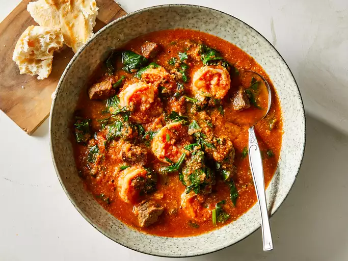
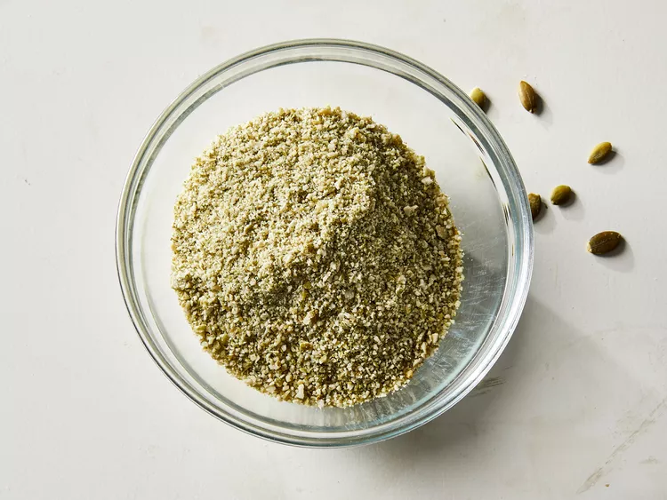
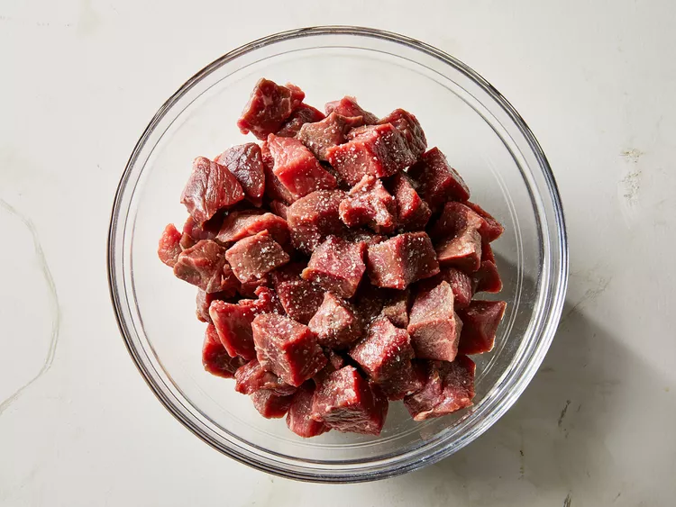

Egusi soup is native to West Africa, and many of my American and Nigerian friends enjoy this recipe when I make it. Ground egusi seeds give the soup a unique flavor. It's a delicious and hearty soup for those who like to try something different every once in a while.
Egusi isn't just food - it's a taste of home for millions of people across Nigeria, Ghana, and other West African countries. Whether you grew up eating it or you're trying it for the first time, this soup has a way of bringing people together around the table.
Perfect For: Family dinners, meal prep, or when you're craving something warm and filling
Place seeds in a blender; blend until mixture is powdery, 30 to 40 seconds. Set aside.

Cut beef into bite-sized cubes; season with salt.

Heat oil in a large pot over medium-high heat. Cook beef in hot oil until brown but not cooked through, 3 to 5 minutes.

Place tomatoes, onion, and peppers in a blender; blend until smooth, about 30 seconds. Stir tomato mixture into beef; reduce heat to medium-low and cover. Cook until meat is tender, 40 to 50 minutes.
Add shrimp, tomato sauce, water, and tomato paste; simmer for 10 minutes.

Stir in spinach and powdered seeds. Continue simmering for 10 more minutes.
 Home
Home